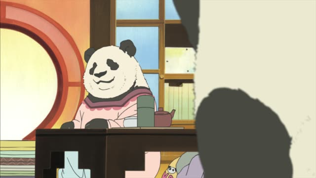

～てほしい
| Polite | ～てほしいです・～てほしいんです |
|---|---|
| Casual | ～てほしい |
Same meaning: "I want you (someone) to do it". Only the politeness changes.
Good Morning Call · Episode 6
あの…人を探してほしいんですけども。
"Um... I'd like you to look for someone." [at an information desk]
～てほしい means "I want someone else to do it". たい is for yourself (行きたい, I want to go), てほしい is for others (来てほしい, I want you to come). The person gets に: 君に来てほしい.
On this card, Uehara asks the staff at an event to find someone for him. んですけども softens it and makes it polite.
Negative: ～ないでほしい, "I don't want you to": 行かないでほしい.
Goblin Slayer · Episode 11
手伝ってほしい。頼む。
"I want you to help. Please."
On this card, Goblin Slayer asks the other adventurers for help, which he never does. 手伝ってほしい: he wants them to help.
Quick Examples
Your friend is leaving early.
もう少しいてほしいな。
"I wish you'd stay a bit longer."
CasualTalking to your boss.
この資料を見てほしいんですが。
"I'd like you to look at this document."
PoliteYour partner is driving fast.
ゆっくり走ってほしい。
"I want you to drive slower."
CasualA parent about a child.
元気に育ってほしいです。
"I want her to grow up healthy."
PoliteWith and without
早く帰りたい。
"I want to go home early." Me.
早く帰ってほしい。
"I want you to go home early." Someone else.
Examples from Media
Kekkon Dekinai Otoko · Episode 6
いや、これはすぐに治してほしいんです。
"No, I want you to fix this right away."
Death Note · Episode 12
本物のキラを演じてほしいんです。
"I want you to play the real Kira."
1 Litre of Tears · Episode 1
書き留めてほしいんですが。
"I'd like you to write it down."
A doctor asks Aya to keep a diary.

Shirokuma Cafe · Episode 40
別のお花を植えたので、許してほしいです。
"I planted other flowers, so I'd like you to forgive me."
Oishinbo · Episode 12
だから栗田くんにも協力してほしいんだ。
"So I want you to help too, Kurita."
Odd Taxi · Episode 13
最後までだましてほしい。
"I want you to keep fooling me to the end."
Samurai Champloo · Episode 4
お前に渡してほしい、そう言ってた。
"He said he wanted me to give this to you."
Kotaro Lives Alone · Episode 1
お前、まさか褒めてほしい…とか？
"Don't tell me you want me to praise you?"